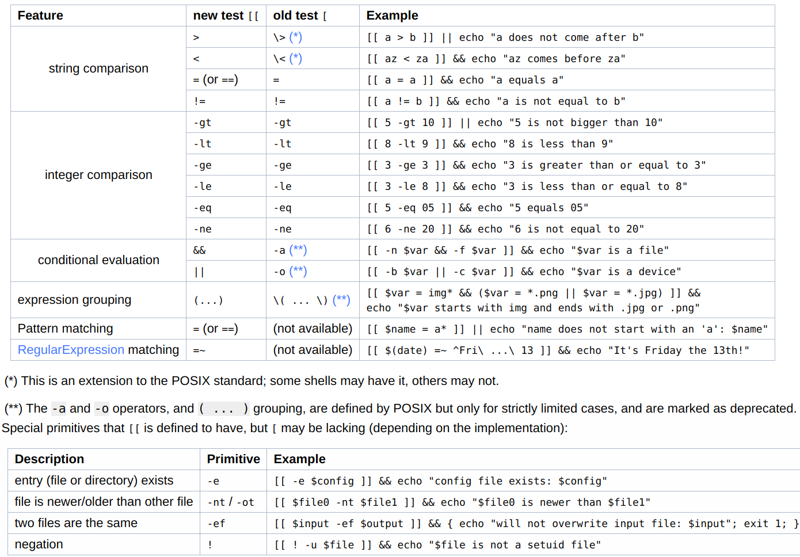

Shell Scripts¶
教程参考
Special Parameters¶
$?: 用于保存刚刚执行的命令的状态返回值- 0: 成功执行；
- 1-255: 表示执行失败
- 2: All builtins return an exit status of 2 to indicate incorrect usage, generally invalid options or missing arguments.
- 126: If a command is found but is not executable, the return status
- 127: If a command is not found, the child process created to execute it returns
- 128+N: When a command terminates on a fatal signal whose number is N, Bash uses the value 128+N as the exit status.
- refer to GNU Bash manual: 3.7.5 Exit Status for more details.
$*,$@: 引用参数。Expands to the positional parameters, starting from one.$#: 位置参数的个数$0: 脚本名称$!: the process ID of the job most recently placed into the background$$: the process ID of the shell
refer to
Safer bash script¶
Came across some scripts jperkel/nature_bash start with
set -euo pipefail
set -eo pipefail
both of which provide safeguards.
-e: cause a bash script to exit immediately when a command fails-o pipefail: set the exit code of a pipeline to that of the rightmost command to exit with a non-zero status, or to zero if all commands of the pipeline exit successfully.-u: treat unset variables as an error and exit immediately
refer to
line begin with :¶
came across in R_HOME/etc/ldpaths when I am investigating the loading issue of conda env from rstudio, https://github.com/szcf-weiya/techNotes/issues/32#issuecomment-881508987
if test -n "/media/weiya/PSSD/Programs/anaconda3/envs/R4.1.0/lib"; then
: ${R_LD_LIBRARY_PATH=${R_HOME}/lib:/media/weiya/PSSD/Programs/anaconda3/envs/R4.1.0/lib}
else
: ${R_LD_LIBRARY_PATH=${R_HOME}/lib}
fi
I am guessing it is also a grammar for variable assignment, and someone (refer to Colon at the beginning of line in docker entrypoint bash script - Stack Overflow) has explained that
:is a no-op command: that is, it doesn’t do anything, but arguments are evaluated normally. Contrast this with a comment (#), which does nothing at all (everything following the#is simply ignored).
also check What is the purpose of the : (colon) GNU Bash builtin? - Stack Overflow
shell变量¶
- 定义变量时，变量名不加美元符号
- 变量名和等号之间不能有空格
- 变量名外面的花括号是可选的，加不加都行，加花括号是为了帮助解释器识别变量的边界，比如下面
for循环中举的${skill}例子。
iterators in for loop¶
- separated by space
for skill in Ada Coffe Action Java; do
echo "I am good at ${skill}Script"
done
start..stop..length
for i in {5..50..5}; do
echo $i
done
Warning
Not valid in sh, and use it with bash!
$ ./sumbit_job.sh
2
4
6
8
$ sh ./sumbit_job.sh
{2..8..2}
Warning
cannot support variable, such as
$ a=100; for i in {160..250..$a}; do echo $i; done
{160..250..100}
$ a=100; for i in {160..250..100}; do echo $i; done
160
seq. The reason is that
In bash, brace expansion happens before variable expansion, so this is not directly possible.
- construct an array
actually, it can be used to construct an array,
arr=({1..10..2})
echo ${arr[@]}
for i in ${arr[@]}; do
echo $i
done
seq
alternatively, we can use seq,
for i in $(seq 5 5 50); do
echo $i
done
String¶
- 单引号里的任何字符都会原样输出，单引号字符串中的变量是无效的；
- 单引号字串中不能出现单引号（对单引号使用转义符后也不行）。
- 双引号里可以有变量
- 双引号里可以出现转义字符
strip first 2 characters¶
simplest way:
${string:2}
some alternatives refer to How can I strip first X characters from string using sed?, or Remove first character of a string in Bash
a real application in my project:
list=""
for nc in {2..10}; do
for nf in 5 10 15; do
list="$list,acc-$nc-$nf"
#https://stackoverflow.com/questions/6594085/remove-first-character-of-a-string-in-bash
echo ${list:1}
done
done
strip from left or right¶
# 从左最大化匹配字符 `y`，然后截掉左边内容
$ var="xxyyzz" && echo ${var##*y}
zz
# 从左匹配第一个字符 `y`
$ var="xxyyzz" && echo ${var#*y}
yzz
# 从右最大化匹配字符 `y`，然后截掉右边内容
$ var="xxyyzz" && echo ${var%%y*}
xx
# 从右匹配第一个字符 `y`
$ var="xxyyzz" && echo ${var%y*}
xxy
remove last character¶
with bash 4.2+,
$ var="xxyyzz" && echo ${var::-1}
xxyyz
refer to Delete the last character of a string using string manipulation in shell script
replace character¶
$ var="xxyyzz" && echo ${var/xx/XX}
XXyyzz
default value¶
${1:-foo}: if parameter is unset or null, the expansion of word is substituted.${1-foo}: only substitute if parameter is unset.
refer to How to write a bash script that takes optional input arguments?
applications:
Array¶
- 在Shell中，用括号来表示数组，数组元素用“空格”符号分割开。
- 所有元素：
${ARRAY[@]}或者${ARRAY[*]} - 数组长度：
${#ARRAY[@]} - 从 0 编号：
${ARRAY[0]}，类似 C 语言，与${ARRAY}返回结果相同。
Image Link -> URL + Label¶
We can use

to insert an image into the post. If there are multiple external web images with regular labels, such as IMG_0XXX, it might be convenient to convert the above format to
[IMG_0802]: https://user-images.githubusercontent.com/13688320/72489850-733ae480-3850-11ea-8e51-15021588a7e6.jpg
and then use the image with ![IMG_0802][IMG_0802]. The solution is
sed -i "s/\!\[IMG_\([0-9]\{4\}\)\](\(.*\))/\[IMG_\1\]\: \2/g" FILENAME
\(\)用于匹配子串，并可以通过\1,\2引用\!需要 escape\2前面的空格不需要写成[ ]，不然会直接出现[ ]，而之前某次为了匹配多个空格需要写成[ ]*
Info
External Images -> Local¶
人总是善变的，过了一段时间，我又想把这些 img 下载到本地文件夹。有个原因是直接使用 GitHub 的外链图片，在墙外访问都很流畅，但是疫情期间待在家，就想将这些外链图片下载到本地，然后通过本地引用图片，这样使得墙内访问更加流畅。
但是之前处理过的文件都删掉了，只剩下传到 GitHub 上的了，所以我首先要把文件下载到合适的位置并重命名。比如对于文件 _posts/2019-12-21-quant-genetics.md，只保留了 https://user-images.githubusercontent.com/ 的链接，采用下面的脚本下载到合适的位置并重命名，
grep -E "https://user-images." _posts/2019-12-21-quant-genetics.md |
while read -a ADDR; do
if [ ${#ADDR[@]} -eq 2 ]; then
proxychains wget ${ADDR[1]} -O images/2019-12-21-quant-genetics/${ADDR[0]:1:8}.jpg;
fi;
done
其中
ADDR[0]:1:8是所谓的 “Parameter Expansion” ${parameter:offset:length}，用于提取特定范围的子串wget -O是重命名，这里顺带移动到合适的位置proxychains则是用于科学上网read -a ADDR表示将分割后的字符串（比如默认按照空格进行分割，或者指定IFS=）放进数组 ADDR 中，详见help read，而man read并没有给出参数列表。另外需要注意到数组$ADDR返回结果为${ADDR[0]}.- 读取单行文件时，采用
;而非 pipeline，比如文件text.txt有单行内容1 2 3 4. 应用read -a A < test.txt; echo ${A[0]}，而非read -a A < test.txt | echo ${A[0]}，后者返回空结果。
- 读取单行文件时，采用
Git Init Date as Post Date¶
for file in $(find . -regex "./.*\.md"); do
first=$(git log --date=short --format=%ad --follow $file | tail -1)
echo $file $first
sed -i "s/^\(|*\)[ ]*时间[ ]*|[^|]*\(|*\)[ ]*$/\1 发布 | $first \2/g" $file
done
其中
$first提取最初 commit 的时间\1和\2是为了处理有些表格写的是|--|--|，而有些用的是--|--，如果混用，则列会发生偏移，所以自适应保留原先的格式|[^|]*是为了匹配第二个除表格符号|的内容，不要直接用|.*，这样也会匹配最后的|，从而\2匹配不到- 定界符
^$为了防止匹配正文中的时间
Rename in Batch¶
有时候下载文件时网站并没有区分同名文件，下载到本地后会出现 A.zip 与 A (1).zip 的情况，但这两个并不是相同的文件，所以避免以后误删，决定重命名。不过此类文件有好几个，批量处理代码为
ls -1 | grep "(1)" |
while read -a ADDR; do mv "${ADDR[0]} (1).zip" "${ADDR[0]}_SOMETHING.zip"; done
统计访问日志里每个 ip 访问次数¶
#!/bin/bash
cat access.log |sed -rn '/28\/Jan\/2015/p' > a.txt
cat a.txt |awk '{print $1}'|sort |uniq > ipnum.txt
for i in `cat ipnum.txt`; do
iptj=`cat access.log |grep $i | grep -v 400 |wc -l`
echo "ip地址"$i"在2015-01-28日全天(24小时)累计成功请求"$iptj"次，平均每分钟请求次数为："$(($iptj/1440)) >> result.txt
done
Refer to
- 用shell统计访问日志里每个ip访问次数
- 技术|如何在Linux中使用awk命令
- unix - count of columns in file
- HANDY ONE-LINE SCRIPTS FOR AWK
- Learn How to Use Awk Special Patterns ‘BEGIN and END’ – Part 9
- Print line numbers starting at zero using awk
split string while reading files¶
specify IFS=.
- How to split a tab-delimited string in bash script WITHOUT collapsing blanks?
- Split String in shell script while reading from file
- Read a file line by line assigning the value to a variable
distribute jobs into queues¶
since different queues has different quota, try to assign the job into available nodes.
queue=(bigmem large batch)
queues=()
for ((i=0;i<12;i++)) do queues+=(${queue[0]}); done;
for ((i=0;i<20;i++)) do queues+=(${queue[1]}); done;
for ((i=0;i<15;i++)) do queues+=(${queue[2]}); done;
where ((i++)) increases i by 1, and similar syntax can be
i=0
i=$((i+1))
# or
i=$(($i+1))
# or
((i+=1))
# or
((i++))
((...)) also support general arithmetic operations, such as
a=30
b=10
echo $((a+=b))
echo $((a*=b))
echo $((a-=b))
echo $((a/=b))
echo $((a/=b))
# 40
# 400
# 390
# 39
# 3
but note that it does not allow float number, as the last equation, which should be 39/10=3.9
the float calculation can take the advantage of other programs, such as
# Note that `BEGIN` cannot be removed, otherwise it is waiting for input file
# see the BEGIN and END pattern of awk
$ awk "BEGIN {print 39/10}"
3.9
$ bc <<< "39/10"
3
$ bc <<< "scale=2; 39/10"
3.90
refer to
- Add a new element to an array without specifying the index in Bash
- Repeat an element n number of times in an array
- The Double-Parentheses Construct
- Increment variable value by 1 ( shell programming)
- Shell 数组
- How to do integer & float calculations, in bash or other languages/frameworks?
Command line arguments¶
refer to Taking Command Line Arguments in Bash
join elements of an array in Bash¶
arr=(a b c)
printf '%s\n' "$(IFS=,; printf '%s' "${arr[*]}")"
# a,b,c
where * or @ return all elements of such array.
refer to How can I join elements of an array in Bash?
A more complex way¶
list=
for nc in {2..10}; do
for nf in 5 10 15; do
if [ -z "$list" ]
then
list=acc-$nc-$nf
else
list=$list,acc-$nc-$nf
fi
done
done
echo $list
globbing for ls vs regular expression for find¶
Support we want to get abc2.txt as stated in Listing with ls and regular expression
,
ls does not support regular expressions, but it can work with globbing, or filename expressions.
ls *[!0-9][0-9].txt
where ! is complement.
Alternatively, we can use find -regex,
find . -maxdepth 1 -regex '\./.*[^0-9][0-9]\.txt'
where
-maxdepth 1disables recursive, and only to find files in the current directory
We also can add -exec ls to get the output of ls, and change the regex type by -regextype egrep.
Multiple IFS¶
while IFS= read -a ADDR; do
IFS=':' read -a Line <<< $ADDR
echo ${Line[0]};
done < <(grep -nE "finished" slurm-37985.out)
will also output the numbers of the finished line.
<()is called process substitution<<<is known ashere string, and different from<<,<
refer to How can I store the “find” command results as an array in Bash
my working case:
files=()
start_time=$(date -d "2019-09-21T14:11:16" +'%s')
end_time=$(date -d "2019-09-22T20:07:00" +'%s')
while IFS= read -r -d $'\0'; do
IFS='_' read -ra ADDR <<< "$REPLY"
timestamp=$(date -d ${ADDR[2]} +'%s')
if [ $timestamp -ge $start_time -a $timestamp -lt $end_time ]; then
curr_folder="${ADDR[0]}_${ADDR[1]}_${ADDR[2]}"
files+=("${ADDR[0]}_${ADDR[1]}_${ADDR[2]}")
qsub -v folder=${curr_folder} revisit_sil_parallel.job
fi
done < <(find . -maxdepth 1 -regex "\./oracle_setting_2019-09-.*recall\.pdf" -print0)
链接自动推送¶
find -regex "\./.*\.html" | sed -n "s#\./#https://esl.hohoweiya.xyz/#p" >> ../urls.txt
Get path of the current script¶
we can get the path of the current script via
CURDIR=`/bin/pwd`
BASEDIR=$(dirname $0)
ABSPATH=$(readlink -f $0)
ABSDIR=$(dirname $ABSPATH)
refer to darrenderidder/bashpath.sh
Tip
dirname is one of the functions for filenames, here are many other functions, such as
dirrealpathabspath
see 8.3 Functions for File Names for more details.
where dirname, together with basename aims to extract the filename and path, such as
$ basename /dir1/dir2/file.txt
file.txt
$ dirname /dir1/dir2/file.txt
/dir1/dir2
$ dirname `dirname /dir1/dir2/file.txt`
/dir1
but note that dirname would also return the parent directory of a directory, as shown in the last case.
Alternatively, we can use ${} to extract the path,
# 从左开始最大化匹配到字符 `/`，然后截掉左边内容（包括`/`)
$ var=/dir1/dir2/file.txt && echo ${var##*/}
file.txt
# 文件后缀
$ var=/dir1/dir2/file.txt && echo ${var##*.}
txt
# 两个文件后缀（从左开始第一次匹配到字符 `.`，然后截掉左边内容（包括`/`)
$ var=/dir1/dir2/file.tar.gz && echo ${var#*.}
tar.gz
# 从右开始第一次匹配到字符 `/`
$ var=/dir1/dir2/file.txt && echo ${var%/*}
/dir1/dir2
# 从右最大化匹配到字符 `.`
$ var=/dir1/dir2/file.tar.gz && echo ${var%%.*}
/dir1/dir2/file
其中 * 表示要删除的内容，另外还需要一个字符表示截断点，注意到与 # 使用时截断字符在右边，而与 % 使用时截断字符在左边。
if statement¶
&> /dev/null¶
We can add &> /dev/null to hidden the output information in the condition of if. For example, check if user exists,
#!/bin/bash
# refer to https://blog.51cto.com/64314491/1629175
if id $1 &> /dev/null; then
echo "$1 exists"
else
echo "$1 is not exists"
fi
note that for an existed user, the exit code is 0, while for a non-existed user, the exit code is non-zero, so the above command seems counter-intuitive.
~$ id weiya &> /dev/null
~$ echo $?
0
~$ id weiya2 &> /dev/null
~$ echo $?
1
another similar form can be found in >/dev/null 2>&1 in if statement
Another example: test if a file has an empty line,
#!/bin/bash
if grep "^$" $1 &> /dev/null; then
echo "there are `grep "^$" $1 | wc -l` empty lines"
else
echo "no empty lines"
fi
logical operation¶
判断 Linux 发行版所属主流发行系列，另见 Linux Distributions
#!/bin/bash
if [ $1 == Fedora -o $1 == Gentoo -o $1 == Redhat ]; then
echo "The $1 is Redhat Series."
elif [ $1 == Suse -o $1 == Opensuse ]; then
echo "The $1 is Suse Series."
elif [ $1 == Ubuntu -o $1 == Mint -o $1 == Debian ]; then
echo "The $1 is Debian Series."
else
echo "The $1 is Unknown Series."
fi
check if uid equals gid¶
#!/bin/bash
if id $1 &> /dev/null; then
# not -G
if [[ `id -u $1` -eq `id -g $1` ]]; then
echo "gid = uid"
else
echo "gid not uid"
fi
else
echo "not exist"
fi
note that use -g instead of -G, where the latter one would print all group ids.
Info
get the id of specific user, id -u weiya, or get the corresponding username by the name, id -un 1000.
sum parameters¶
#!/bin/bash
sum=0
for I in `seq 1 $#`; do
sum=$(($sum+$I))
done
echo $sum
alternatively,
#!/bin/bash
# refer to https://blog.51cto.com/64314491/1629175
sum=0
for I in `seq 1 $#`; do
sum=$(($sum+$1))
shift
done
echo $sum
where shift alternates the parameters such that $1 becomes the next parameter.
The results are
$ ./sum-paras.sh 1 2 3 4
10
$ ./sum-paras2.sh 1 2 3 4
10
test string¶
=~: 判断左边的字符串是否能被右边的模式所匹配-z $A: 字符串长度是否为 zero（为空则为真，否则为假）-n $A: 字符串长度是否为 nonzero（为空则为假，否则为真）- more details refer to
man test.
#!/bin/bash
Shell=`grep "^$1:" /etc/passwd | cut -d: -f7`
if [[ -z $Shell ]]; then
echo "No such user"
fi
if [[ $Shell =~ sh$ ]]; then
echo "Login user"
else
echo "Not a login user"
fi
test file¶
格式为 [ EXPR FILE ]，其中常见 EXPR 有
-f: 测试其是否为普通文件，即ls -l时文件类型为-的文件-d: 测试其是否为目录文件，即ls -l时文件类型为d的文件-e: 测试文件是否存在；存在为真，否则为假-r: 测试文件对当前用户来说是否可读-w: 测试文件对当前用户来说是否可写-x: 测试文件对当前用户来说是否可执行-s: 测试文件大小是否不空，不空则真，空则假
例子
if [ ! -e /tmp/test ]; then
mkdir /tmp/test
fi
refer to bash条件判断之if语句
[ (aka test) vs [[¶
Refer to [What is the difference between test, [ and [ ?
Both are used to evaluate expressions, but
[[works only in Korn shell, Bash, Zsh, and recent versions of Yash and busyboxsh[is POSIX utilities (generally builtin)

But there are some differences:
- no word splitting or glob expansion will be done for
[[, i.e., many arguments need not be quoted, while[usually should be quoted - parentheses in
[[do not need to be escaped
also see
- What do square brackets mean without the “if” on the left?
- Is double square brackets preferable over single square brackets in Bash?
$[¶
Refer to What does a dollar sign followed by a square bracket mean in bash?
With $, [ is also can be used for arithmetic expansion, such as
$ echo $[ $RANDOM % 2 ]
0 # 1
$ echo $[ 1+2 ]
3
and actually $[ syntax is an early syntax that was deprecated in favor of $((, although it’s not completely removed yet.
= vs == vs -eq¶
from the above discussion:
==is a bash-ism=is POSIX
In bash the two are equivalent, but in plain sh = is the only one guaranteed to work. And these two are for string comparisons, while -eq is for numerical ones.
refer to Shell equality operators (=, ==, -eq)
grep keep the first line (use sed instead)¶
Refer to Include header in the ‘grep’ result
I am using
$ sinfo -o "%P %N %C %G" -N | grep gpu
to get the GPU status of the nodes on the cluster, but the header cannot be kept, then I tried
$ sinfo -o "%P %N %C %G" -N | { head -1; grep gpu; }
but it only shows the header
Next I got the excellent solution via sed,
$ sinfo -o "%P %N %C %G" -N | sed -n "1p;/gpu/p"
and it can hide the highlighter of gpu.
compare two blocks in a txt file¶
for example, compare L82-95 with L108-123,
$ diff <(sed -n "82,95p" measure.jl) <(sed -n "108,123p" measure.jl)
|| as try...catch¶
No try...catch in bash script, but command1 || command2 can achieve similar functionality, if command1 fails then command2 runs.
An application is to create a new tmux session if there is no such a tmux session,
t() { tmux a -t $1 || tmux new -s $1; }
refer to Is there a TRY CATCH command in Bash
Replace a multiple line string¶
sed is powerful for replace in one-line, but it would be much more complicated for multiple line string.
An alternative is to use perl,
$ printf "###BEGIN-EXCLUDE\nwww\n###END-EXCLUDE" | perl -0777 -pe "s/###BEGIN-EXCLUDE(.*?)###END-EXCLUDE/xxx/igs"
xxx
where
-0777causes Perl to slurp files whole, see -0[octal/hexadecimal] for more details-e commandline-p: my understanding is something for printing, but the official document explain more
For a file to be edited in-place, we add -i,
$ perl -0777 -i -pe "s/###BEGIN-EXCLUDE(.*?)###END-EXCLUDE//igs" test.txt
if we supply an extension such as -i'.orig', then the old file would be backed up to test.txt.orig.
Refer to How can I use sed to replace a multi-line string?
Moreover, .*? is a non-greedy match, comparing to .*.
$ echo "s12tAs34t" | perl -pe "s/s(.*?)t/xx/igs"
xxAxx
$ echo "s12tAs34t" | perl -pe "s/s(.*)t/xx/igs"
xx
Refer to 6.15. Greedy and Non-Greedy Matches docstore.mik.ua/orelly/perl/cookbook/ch06_16.htm for details.
By default, grep performs greedy match, adding option -P would enable Perl’s non-greedy match.

Info
An real application: update_bib.sh
Refer to How to do a non-greedy match in grep?
Cut Lines from Large File¶
TL; DR
- the most efficient is
tail -n+ | head(orhead | tail) - the exit option
qforsed,exitforawkandperlcan speed up.
prepare the follow text file to compare the processing speed of several common methods,
$ l1=1000000
$ l2=1000050
$ l=100000000
$ seq 1e8 > test.txt
head + tail
$ time tail -n+$l1 test.txt | head -n $(($l2 - $l1 + 1)) > /dev/null
real 0m0.033s
user 0m0.019s
sys 0m0.000s
$ time head -n $l2 test.txt | tail -n $(($l2 - $l1 + 1)) > /dev/null
real 0m0.014s
user 0m0.019s
sys 0m0.007s
$ time tail -n $(($l - $l1 + 1)) test.txt | head -n $(($l2 - $l1 + 1)) > /dev/null
real 0m25.930s
user 0m1.467s
sys 0m1.807s
note that tail -n+ is much powerful than tail -n, it seems like the former one just move the cursor to the specific line, while the latter need to load/count from the last line (my guess). Refer to cat line X to line Y on a huge file
sed/awk/perl solutions read the whole file and since this is about huge files, they’re not very efficient. But they can be faster via exit or quit after the last line in the specified range (refer to What’s the best way to take a segment out of a text file?):
sed
$ time sed -n "$l1,$l2 p" test.txt > /dev/null
real 0m4.621s
user 0m4.253s
sys 0m0.336s
$ time sed -n "$l1,$l2 p; $l2 q" test.txt > /dev/null
real 0m0.054s
user 0m0.047s
sys 0m0.008s
awk
$ time awk "$l1 <= NR && NR <= $l2" test.txt > /dev/null
real 0m15.294s
user 0m15.046s
sys 0m0.220s
$ time awk "$l1 <= NR && NR <= $l2; NR>$l2{exit}" test.txt > /dev/null
real 0m0.158s
user 0m0.158s
sys 0m0.001s
perl
$ time perl -ne "print if ${l1}..${l2}" test.txt > /dev/null
real 0m10.708s
user 0m10.498s
sys 0m0.200s
$ time perl -ne "print if $. >= ${l1}; exit if $. > ${l2}" test.txt > /dev/null
real 0m0.203s
user 0m0.203s
sys 0m0.000s
- others
$ time ed -s test.txt <<< "$l1, $l2 p" > /dev/null
real 0m43.132s
user 0m6.234s
sys 0m3.637s
Delete Lines in Large File¶
either q or u does not make differences for deleting.
$ seq 1e7 > test.txt
$ time sed -iu "$l1,$l2 d" test.txt
real 0m26.481s
user 0m5.558s
sys 0m20.592s
$ time sed -iu "$l1,$l2 d; $l2 q" test.txt
real 0m26.560s
user 0m5.611s
sys 0m20.566s
$ time sed -i "$l1,$l2 d; $l2 q" test.txt
real 0m27.161s
user 0m5.682s
sys 0m21.266s
$ time {
sed "$l1,$l2 d" < test.txt
perl -le 'truncate STDOUT, tell STDOUT'
} 1<> test.txt
real 0m0.983s
user 0m0.913s
sys 0m0.069s
$ wc -l test.txt
9999949 test.txt
$ time {
head -n "$(($l1 - 1))"
head -n "$(($l2 - $l1 + 1))" > /dev/null
cat
perl -le 'truncate STDOUT, tell STDOUT'
} < test.txt 1<> test.txt2
real 0m0.069s
user 0m0.007s
sys 0m0.061s
$ wc -l test.txt
10000000 test.txt
$ wc -l test.txt2
9999949 test.txt2
where we open two file descriptors to the files,
- one in read-only mode using
< test.txtshort for0< test.txt - one in read-write mode using
1<> test.txt2(<> filewould be0<> file)
then just treat fd0 as the input and fd1 as the output.
- the first
headreads first$l1 - 1lines fromfd0and write that tofd1 - the second
headremoves the middle lines fromfd0butfd1retains. - the following
catreads the remaining lines fromfd0tofd1 catwill return when it reaches the end of file onfd0, butfd1will point to somewhere in the file that has not been overwritten yet. What we need is to truncate the file at the exact location where thatfd1points to now. That’s done with theftruncatesystem call.tell STDOUTgives us the current cursor position associated withfd1. And we truncate the file at the offset using perl’s interface to theftruncatesystem call:truncate. The usage is that
truncate FILEHANDLE,LENGTH
truncate EXPR,LENGTH
Truncates the file opened on FILEHANDLE, or named by EXPR, to the specified length.
refer to Is there a faster way to remove a line (given a line number) from a file?
Warning
In the reference, the author wrote < file 1<> file, which might be confusing that he used the same file, then it would throws an error,
cat: -: input file is output file
Actually, I think he wanted to represent two files comparing to the first solution he mentioned, in which only single file used, and he warned that “Dangerous as you’ve no backup copy there.”
Here is another discussion on Why can’t an input file be an output file? - Unix & Linux Stack Exchange
I also run the third solution, but the lines are not deleted. There might be some incompatible reasons.
Redirection and File Descriptor¶
hide output from bg process¶
Note that
when you put & the output - both stdout and stderr - will still be printed onto the screen.
If you do not want to see any output on the screen, redirect both stdout and stderr to a file by:
myscript > ~/myscript.log 2>&1 &
myscript > /dev/null 2>&1 &
refer to Why can I see the output of background processes?
Specifically, integer 1 stands for stdout file descriptor, while 2 represents stderr file descriptor (refer to How to redirect stderr to a file).
echo Hello World > /dev/null
is same as
echo Hello World 1> /dev/null
Info
Formally, this is called redirecting output: [n]>[|]word, if n is not specified, it is the standard output (fd 1).
Similarly,
- redirecting input:
[n]<word, ifnis not specified, it is the standard input (fd 0) - appending redirected output:
[n]>>word, ifnis not specified, it is the standard output (fd 1)
As for spacing, integer is right next to redirection operator, but file can either be next to redirection operator or not, i.e., command 2>/dev/null or command 2> /dev/null.
The classical operator, command > file only redirects standard output, several choices to redirect stderr,
- Redirect stdout to one file and stderr to another file
command > out 2> error
- Redirect stdout to a file, and then redirect stderr to stdout NO spacings in
2>&1
command > out 2>&1
- Redirect both to a file (not supported by all shells, but
bashis OK)
command &> out
Info
Formally, this is called redirecting standard output (fd 1) and standard error (fd 2): &>word or >&word, but the first one is preferred, and it is equivalent to >word 2>&1.
A related one is appending standard output and standard error: &>>word, which is equivalent to >>word 2>&1
In more technical terms, [n]>&word is called Duplicating Output File Descriptor:
[n]<&wordis used to duplicate input file descriptors. Ifwordexpands to one or more digits, the file descriptor denoted bynis made to be a copy of that file descriptor.[n]>&wordis used to duplicate output file descriptors.
Warning
The order of redirections is significant. For example,
ls 2>&1 > dirlist
dirlist, because the standard error was made a copy of the standard output before the standard output was redirected to dirlist.
We can redirect output to a file and stdout simultaneously
program [arguments...] 2>&1 | tee outfile
Other kinds of redirections can be found in the official documentation, 3.6 Redirections
- here documents
[n]<<[-]word
here-document
delimiter
for example, HELP_USAGE
- here strings:
[n]<<< word - moving file descriptors:
[n]<&digit-(or[n]>&digit-) moves the fddigitto fdn - opening fd for reading and writing:
[n]<>word, the default is fd 0 ifnis not specified.
select lines based on 2nd file¶
Given an input file,
a
b
b
c
c
c
d
e
f
f
g
and given the duplicated index file, where the second column is the starting index for duplicates, and the first column is the corresponding number of duplicates.
The goal is to delete the duplicated records but only keep one of them. Although
$ uniq input.txt
can finish the work. But if there are multiple columns in input.txt and the uniqueness is determined by several selected index. It might be convenient to keep the duplicated index (or the corresponding unique index).
{
lastid=0
lastn=1
while read n id; do
echo $n, $id >&2
retain=$(( $id - ($lastid + $lastn - 1) ))
remove=$(($n - 1))
echo "$n, $id, retain $retain, remove $remove" >&2
head -n "$retain" <&3 >&1
# head -n $(($id - 1))
head -n "$remove" <&3 > /dev/null
lastn=$n
lastid=$id
done < duplicated.idx # DO USE `3<` here, otherwise while read from input.txt
cat <&3 >&1
perl -le 'truncate STDOUT, tell STDOUT'
} 3< input.txt 1<> out.txt
refer to
&& vs ;¶
cmd1 && cmd2: ifcmd1failed, thencmd2would not executecmd1 ; cmd2: ifcmd1failed,cmd2will still execute
so use && when cmd1 is to enter the folder, refer to Crontab - Run in directory - Stack Overflow